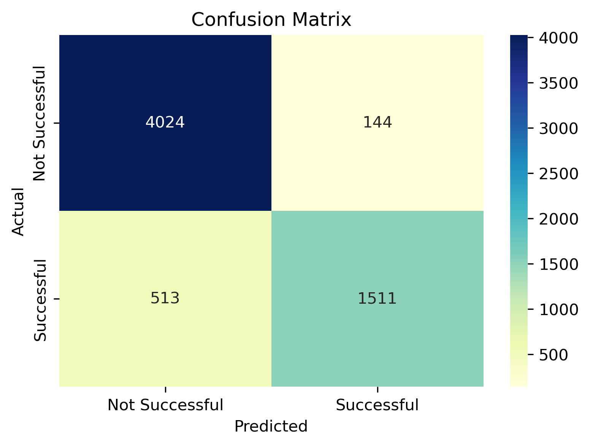
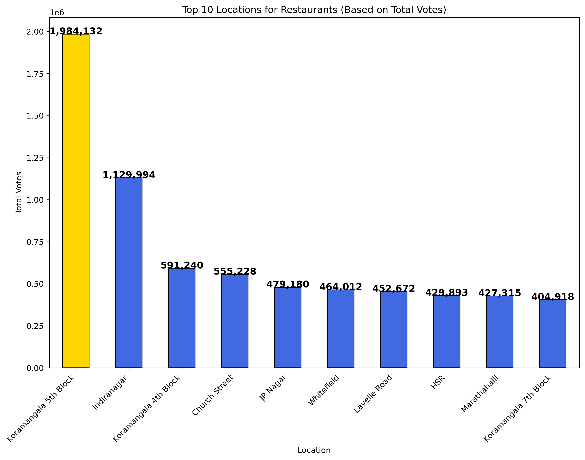
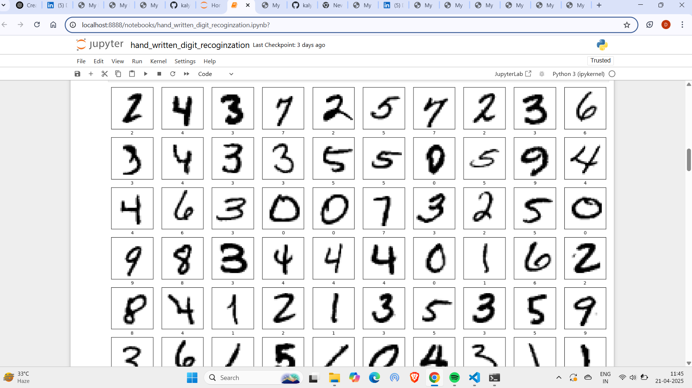
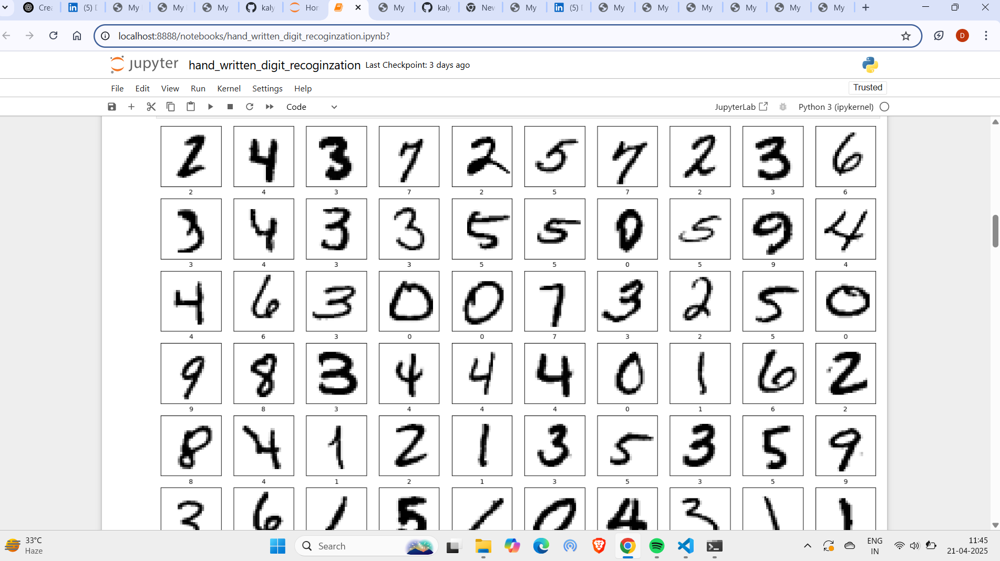

Projects
Project 1:Zomato Restaurants Analysis & Predictive Modeling
 Performed an in-depth analysis of restaurant data from Zomato, exploring various factors affecting restaurant ratings and customer preferences. Used predictive modeling techniques to forecast restaurant ratings based on various attributes, classifying restaurants as low-rated and high-rated.
Technologies Used: Python, Pandas, Scikit-learn, Matplotlib, Seaborn
Key Insights: - Analyzed restaurant attributes such as location, cuisine, and cost to identify trends. - Built a predictive model to forecast ratings for new restaurants based on historical data. - Visualized data insights through interactive dashboards in Excel.
View Project on GitHubProject 2:Handwritten Digit Recognition
 

This project involves training a model to recognize handwritten digits using the MNIST dataset. It leverages deep learning techniques, specifically Convolutional Neural Networks (CNN), to achieve high accuracy in classifying handwritten digits.
Technologies Used: Python, TensorFlow, Keras, NumPy, Matplotlib
Key Insights: - Trained a CNN model to classify digits with high accuracy. - Visualized predictions made by the model on test images. - Achieved impressive results in digit classification using deep learning techniques.
View Project on GitHub